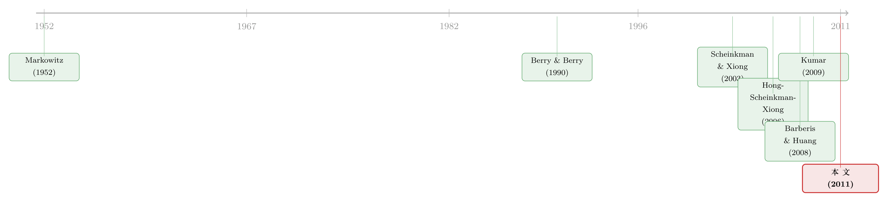

上帝怎么看赌博，市场就怎么定价
本文读的是 Kumar, Page & Spalt (2011, JFE)：作者用一个县里「天主教徒 / 新教徒」的人口之比当作当地人「赌性」的代理变量，发现在这个比值更高的地方，机构投资者更愿意持有彩票型股票、公司更爱给普通员工发期权、新股上市首日涨得更凶、彩票型股票的负溢价也更大。一句话——地方宗教塑造的赌博态度，会一路渗进投资组合、公司决策和资产价格。
1 一个绕不开的难题：赌性看不见
赌博和投机，从来都是金融市场里那条「上不了台面、却谁也躲不开」的暗线。高换手、高波动、低平均收益，这些被反复记录的现象（Scheinkman and Xiong, 2003；Hong, Scheinkman, and Xiong, 2006），背后或多或少都站着一群「爱赌」的人。问题在于——你怎么知道谁在赌？
这正是这条研究最别扭的地方。个人层面的赌博与投机行为，几乎无法被直接观测到：你看不到某个投资者在心里给一只股票贴了「彩票」的标签，也看不到某家公司发期权时，瞄准的是员工那点「以小博大」的心思。于是，尽管资产定价和公司金融的文献早就反复暗示赌博「很重要」，却始终难以把市场层面的总量结果，直接归因到人们的赌博偏好上。
缺的，是一把能在地图上量出「赌性」的尺子。
2 为什么是天主教徒比新教徒？
Kumar、Page 和 Spalt 的聪明之处，是去借宗教这把尺子。他们的出发点是一个被宗教社会学反复确认的事实：一个人对赌博的态度，强烈地由其宗教背景决定。
而新教与天主教，恰恰在赌博这件事上态度截然相反。新教 (Protestant) 自其运动诞生之初，就把赌博视作道德上的「堕落」——文中引了卫理公会 2004 年的决议，直接称「赌博是社会的祸害」；最大的新教群体南方浸信会 (Southern Baptists) 对赌博的谴责尤为严厉。天主教 (Catholic) 则宽容得多：它不仅不把适度的博彩看作罪，甚至把宾果游戏 (bingo) 和慈善博彩当成重要的筹款手段。介于两者之间还有犹太教（接近天主教）、摩门教 (Mormon)（接近新教）。
于是作者构造了核心变量——天主教徒与新教徒之比 (Catholic–Protestant ratio, CPRATIO)。这个比值越高，意味着当地文化对赌博越宽容，居民的赌博倾向 (gambling propensity) 越强。
接着，一个自然的问题是：这把尺子靠谱吗？作者先做了一个「前置检验」——他们用县级 CPRATIO 去解释州彩票政策与人均彩票销售额，发现 CPRATIO 越高的州，越早立法、越早开办彩票，且无论州还是县层面，人均彩票销售额都更高。这与 Berry and Berry (1990)、Martin and Yandle (1990) 等早期政治学研究一脉相承。换句话说，在「真金白银去买彩票」这件能直接观测的事情上，CPRATIO 确实抓住了赌性。
这里有一个常被误读的设定：作者不是用本地宗教去推断「做决策那个人」信什么教。他们的逻辑是——主导性的地方宗教塑造了当地文化，而文化会系统性地影响在此生活的人，哪怕他本人并不皈依这个主流信仰。一个住在犹他州的非摩门教徒，照样会被周遭的摩门文化浸染；一个住在新教主导的田纳西州的天主教徒，也会沾上当地的新教规范。
3 一根变量，四个战场
有了 CPRATIO 这把尺子，作者把它依次架到了四个「赌博可能起作用」的经济场景上，每一处都对应一组可检验的假设（H1–H4）。这是全文的主干，也是它「一鱼四吃」的精彩之处。
第一战场：机构投资者的持仓 (H1)。 通常机构因为「审慎人规则」(prudent man rules) 等约束，会回避高波动、高偏度的彩票型股票（Kumar, 2009）。但作者预期：位于高 CPRATIO 地区的中小机构，会给彩票型股票更高的权重，同时低配非彩票型股票。 而且这种「宗教—持仓」关系，只在小型和中型机构里显著——大型机构（如 Fidelity）投资流程标准化、受共同基准约束（Baker, Bradley, and Wurgler, 2011），本地宗教氛围对它们几乎不起作用。更进一步，这种偏好在「激进型」机构、持仓集中、换手频繁的机构里更强，而且会在年末被放大——业绩排名的诱惑让有赌性的机构在岁末更敢下注（呼应 Brown, Harlow, and Starks, 1996 的锦标赛激励）。
什么叫彩票型股票 (lottery-type stocks)？沿用 Kumar (2009) 的定义：低价格、高异质性波动率、高异质性偏度的股票——就像州彩票一样，价格低、期望收益为负、却有一条「极小概率、极大回报」的右偏尾巴。它的理论根基是 Barberis and Huang (2008)：在累积前景理论下，投资者会高估小概率事件，从而偏爱正偏的资产。（关于「以小博大」与「买保险」如何同出一源，可参见《赌博的四季：当一个够不着的目标，同时教你买彩票和买保险》；关于偏度本身对截面收益的预测力，可参见《市场的下一步，藏在一万只股票的歪斜里》。）
第二战场：员工股票期权之谜 (H2)。 这是一个老大难的公司金融难题——为什么公司要给非高管的普通员工大面积发期权 (broad-based employee stock option plans)？传统框架很难解释（Oyer and Schaefer, 2004；Bergman and Jenter, 2007）。作者的解释是：期权对有赌性的员工而言，就是一张「彩票」。证据是员工常常给期权估出高于其精算公允价值的价（Hodge, Rajgopal, and Shevlin, 2010），而且越是高风险的公司越爱发期权（Spalt, 2009）。于是 H2a 预测：高 CPRATIO 地区的公司，宽基期权计划更流行；H2b 进一步预测，这种「期权—宗教」关系在高波动公司里更强——因为高波动意味着更高偏度，对爱赌的人更有吸引力。
第三战场：IPO 首日收益 (H3)。 这是直接检验 Barberis and Huang (2008) 的核心预言：正偏的 IPO 会被嗜偏度的投资者推高、产生短期超额定价 (overpricing)。H3a 预测：高 CPRATIO 地区的 IPO 公司，上市首日收益更高。 但真正关键的一步在于——作者要把这个首日收益和「本地投资者的赌性」钉死在一起。他们的论证是：只有当本地投资者真的参与市场、且偏爱本地股票时，本地偏好才会反映进首日定价。于是 H3b 预测：在市场参与率更高（用更高收入、更高教育程度代理）、本地偏好 (local bias) 更强的地区，「宗教—IPO 收益」关系应当更强。这一步把一个相关性，变成了一条有微观机制支撑的链条。（关于民主与制度如何影响 IPO 折价的另一条思路，可参见《民主越成熟，新股就越不必打折？》。）
第四战场：彩票型股票的负溢价 (H4)。 既然彩票型股票按理应当赚取更低的平均收益（投资者愿意为一线暴富的机会接受低回报），那么 H4 预测：在高 CPRATIO 地区，这种负的「彩票股溢价」(lottery-stock premium) 的幅度应当更大——因为那里有更多人愿意为这点赌性买单。
四个战场，一以贯之，都指向同一个核心：宗教塑造的赌性，会从个人偏好一路聚合成市场层面的力量，同时改写公司政策和资产价格。
4 数据：把宗教画进美国地图
作者的数据拼图，第一块是宗教。他们用美国宗教数据档案 (American Religion Data Archive, ARDA) 里的「教会与教会成员」(Churches and Church Membership) 文件，覆盖 133 个犹太—基督教派别的县级数据。受限于普查频率，县级宗教数据只有 1980、1990、2000 三个年份，作者按近期文献（Hilary and Hui, 2009 等）的做法做线性插值，覆盖 1980–2005 的样本期。
第二块是县级人口学特征，来自美国人口普查局：总人口、教育程度（25 岁以上拥有学士学位的比例）、性别比、已婚家庭比例、少数族裔比例、人均收入、年龄中位数、城市化率等，全部作为控制变量。
几个值得记住的描述性数字（来自 Table 1）：作者有 3,092 个县的宗教与人口数据，而机构投资者只分布在其中 415 个县里。典型（中位数）公司所在的县，天主教徒占人口 17.44%、新教徒占 24.95%；而典型美国县的对应数字是 8.62% 与 40.37%——这说明美国公司倾向于扎堆在天主教浓度更高的地方。CPRATIO 的离散度也相当可观：25 分位是 0.25，75 分位高达 1.63。同时，样本公司所在的县更富（人均收入 $24,613 vs 典型县 $16,772）、更受教育（大学学历比例 22.97% vs 12.65%）、也更城市化（城市人口比例 82.99% vs 36.60%）——这些差异，正是作者要在回归里小心控制掉的东西。
5 结果与稳健性
这篇论文的实证结果章节在我手头的正文中被截断，因此下面我只复述论文明确陈述的定性结论与方向，不给出具体的回归系数或 t 值，以免编造。读者若需精确量级，请回到原文 Table 4 及之后。
四组假设，结论高度一致，都站在「赌博解释」这一边：
- 机构持仓（H1）：高
CPRATIO地区的机构，给彩票型股票更高权重、低配非彩票型股票；这种关系只在中小机构显著，在大型标准化机构里消失；在激进型、集中持仓、高换手的机构里更强，并在年末被放大。作者还专门做了检验，确认结果不是由机构在少数大县与金融中心的地理扎堆、或重复观测人为造出来的。 - 员工期权（H2）：宽基期权计划在高
CPRATIO地区更流行；且「期权—宗教」关系在高波动公司里更强，与「员工把期权当彩票」的解释吻合。 - IPO 首日收益（H3）：高
CPRATIO地区的 IPO 首日收益更高；并且这一关系在市场参与率更高、本地偏好更强的地区更明显——把定价与本地投资者的边际作用绑定了起来。 - 彩票股溢价（H4）：彩票型股票确实赚取更低的平均收益，而这种负溢价的幅度在高
CPRATIO地区更大。
稳健性方面，作者特别提到用 Rajan and Zingales (1998) 的方法处理州与县层面的不可观测异质性，结果与基准定性一致。整体上，结论是稳的：宗教诱导的赌博规范，同时影响了个人偏好、个体经济决策与市场总量结果——公司政策和资产价格，都被本地赌性「调」过了。
6 文献脉络
要理解这篇论文站在哪里，得把两条线索拧到一起。
一条是「赌博如何进入资产定价」的理论线。早在 Markowitz (1952) 就猜测，有些投资者偏爱「以极小损失的大概率，换极大收益的小概率」——这几乎就是彩票偏好的雏形。半个世纪后，Barberis and Huang (2008) 用累积前景理论把它形式化：投资者高估小概率、偏爱正偏，于是正偏资产（IPO、彩票型股票）会被推高、赚取更低收益。与此并行，Scheinkman and Xiong (2003) 与 Hong, Scheinkman, and Xiong (2006) 则从异质信念与投机泡沫的角度，刻画了投机如何制造高换手与高波动。
另一条是「文化与宗教如何进入经济」的实证线。Stulz and Williamson (2003) 把文化与投资者保护联系起来；而具体到赌博，Berry and Berry (1990) 等早就发现，一个地区彩票的流行程度受主导宗教影响。真正把这两条线第一次接上的，是 Kumar (2009)——他证明散户的社会经济特征（包括本地宗教）会影响其对彩票型股票的投资。

这篇论文，正是 Kumar (2009) 的「机构化与总量化」升级版：它把视角从散户扩展到机构，并把同一个 CPRATIO 代理变量，一口气架到组合选择、期权、IPO、截面定价四个场景，宣称赌性不止改变个人，还能聚合成市场层面的力量。它也与 Hilary and Hui (2009) 互补——后者发现宗教通过风险厌恶渠道影响公司政策，而本文强调的是宗教通过偏度偏好与赌性这条不同的渠道在起作用。
7 评论与延伸（Q&A + 研究方向）
(a) 几个可能的疑问
Q：用「天主教 / 新教之比」当赌性代理，会不会其实在量别的东西（收入、教育、城市化）？
这是最致命的内生性担忧，作者也最当回事。他们的做法是把人均收入、教育、城市化、族裔、婚姻状况等一整套人口学变量都放进回归做控制，并用 Rajan-Zingales 方法吸收州/县不可观测异质性。更有说服力的是那个「前置检验」：
CPRATIO能正向预测人均彩票销售额这一可直接观测的赌博行为——这让「它抓的是赌性」比「它抓的是富裕」更可信。但残余的遗漏变量风险无法完全排除。
Q：CPRATIO 高的地方，公司本来就扎堆（机构只在 415 个县里），结果会不会是地理扎堆造出来的？
作者明确做了检验，确认机构持仓结果不是由少数大县、金融中心的扎堆或重复观测造成的。这条担忧被正面回应了，但「公司倾向扎堆在高天主教浓度地区」这个事实本身（中位数公司县 17.44% vs 全国 8.62%），仍提醒我们样本并非随机分布。
Q：彩票型股票的「低收益」，和经典的特质波动率之谜 (idiosyncratic volatility puzzle) 是一回事吗？
高度重叠但不等同。彩票型股票由低价、高异质波动、高异质偏度三者共同定义，偏度是它区别于单纯「高波动」的关键。本文的增量在于：它不止记录这个负溢价，还说明这个负溢价的幅度随本地宗教而变——这是单纯的波动率之谜解释不了的。
Q：员工期权那条线，怎么排除「高 CPRATIO 地区恰好是高科技、本就爱发期权」的混淆？
作者的关键检验是 H2b 的横截面异质性：期权—宗教关系在高波动公司里更强。如果只是行业构成差异，没有理由预期这种「高波动放大效应」。这个交互项设计，比单纯的主效应更难被简单的行业故事解释掉。
Q：IPO 首日收益更高，到底是「本地散户把价抬高了」，还是承销商定价行为不同？
作者用 H3b 来逼近这个问题：只有市场参与率高、本地偏好强的地区，宗教—IPO 关系才更强。这把因果指向了「本地投资者的边际定价作用」，而非承销商。但严格说，这仍是间接证据——首日收益是二级市场需求与一级市场定价的合成，无法完全把承销商行为剥离干净。
Q：宗教是缓慢变量（十年一测、还要插值），怎么识别它的「因果」效应？
老实说，本文的识别本质上是横截面 + 控制变量，而非干净的准实验。宗教的地理变异是长期、稳定、几乎外生于金融市场的，这是它作为代理变量的优势；但也意味着它和其他缓慢的地方文化特征高度共线，难以宣称严格的因果。这是这类「文化与金融」研究共同的软肋。
(b) 几个可能的研究问题与提案
1. 把「赌性地理」搬到公司债与信用市场。
【经济故事】彩票偏好在股票里被反复验证，但信用市场几乎是空白。高收益债、深度折价的「困境债」(distressed bonds) 本身就有强烈的右偏回报结构——会不会高 CPRATIO 地区的散户型债基、保险公司也更偏爱这类「债券版彩票」，从而压低其信用利差？
【可行性】中。CPRATIO 数据可复制（ARDA 公开），机构总部地理可从 Nelson/13F 获取，债券持仓可用 NAIC（保险）或债基持仓数据。难点在于偏度型债券的定义与利差的流动性成分剥离。
2. 外资持有人会「稀释」还是「放大」本地赌性？
【经济故事】本文讲的是本地文化塑造本地决策。但当一只股票的边际定价者越来越多是跨境外资（他们带着自己国家的宗教/赌博文化）时，本地 CPRATIO 对定价的影响会被稀释吗？这能把「文化—定价」从「本地」推到「全球」。
【可行性】中。需要股票层面的外资持股比例（如各国的可投资度变化、被动指数纳入事件作为外生冲击），与本地 CPRATIO 做交互。识别可借鉴指数纳入的准实验。
3. 赌性地理与债基的赎回脆弱性。
【经济故事】如果高 CPRATIO 地区的散户更偏爱右偏、波动大的资产，他们持有的债基在压力期是否更容易出现挤兑式赎回，从而把本地文化变成系统性流动性风险的源头？
【可行性】中偏低。需要把基金持有人地理分布与基金流匹配，持有人地理数据较难获取，可能只能用基金销售渠道或分销地区近似。
4. 宗教构成的「外生冲击」能否提供更硬的识别？
【经济故事】本文识别偏弱，主因是宗教是缓慢变量。但历史上有移民潮、教会合并、宗派分裂等事件会突然改变一个县的 CPRATIO。用这类冲击做事件研究，能否更干净地识别「赌性变化 → 定价变化」？
【可行性】低到中。理念漂亮，但找到既影响 CPRATIO、又对金融市场外生的历史冲击非常困难，且样本量有限。
5. 数字博彩合法化作为时间维度的检验。 【经济故事】2018 年后美国体育博彩在各州陆续合法化，等于给「赌博可得性」一个交错的时间冲击。如果赌性真的驱动彩票股需求，那么州博彩合法化之后，本州彩票型股票的需求与负溢价是否会随之变化？这给本文纯横截面的设计补上一条时间轴。 【可行性】高。州级博彩合法化时点公开、交错发生，天然适合交错双重差分（注意近期文献对交错 DiD 的修正，参见《当更稳健的设计悄悄把符号弄反了——重读交错双重差分》）。
8 参考文献
我的判断：这篇论文最大的贡献，是把一个「看不见的偏好」用一个地理上可观测、且几乎外生于金融市场的文化变量给量了出来，并以「一变量、四战场」的方式，证明赌性不止是个人怪癖，而能聚合成市场层面的系统性力量。它把行为金融从「实验室与散户」推进到了「机构、公司与总量」，这是真正的增量。
但要诚实地说，它的识别是横截面相关 + 控制变量式的，而非准实验。宗教虽缓慢稳定，却也和无数其他地方文化特征纠缠在一起；作者用前置的彩票销售检验、机构规模与年末的异质性检验来层层加固「赌博解释」，做得很扎实，却仍无法完全堵死遗漏变量与反向因果的缝隙。我最想看到的后续，是一个能提供时间维度外生冲击的设计——博彩合法化、移民潮、教派变动——把这条「文化 → 赌性 → 价格」的链条，从相关推到因果。
- Barberis, N., Huang, M. (2008). Stocks as lotteries: the implications of probability weighting for security prices. American Economic Review 98(5), 2066–2100.
- Berry, F.S., Berry, W.D. (1990). State lottery adoptions as policy innovations: an event history analysis. American Political Science Review 84, 395–415.
- Brown, K.C., Harlow, W., Starks, L.T. (1996). Of tournaments and temptations: an analysis of managerial incentives in the mutual fund industry. Journal of Finance 51, 85–110.
- Hong, H., Scheinkman, J.A., Xiong, W. (2006). Asset float and speculative bubbles. Journal of Finance 61, 1073–1117.
- Kumar, A. (2009). Who gambles in the stock market? Journal of Finance 64, 1889–1933.
- Markowitz, H. (1952). The utility of wealth. Journal of Political Economy 60, 151–158.
- Martin, R., Yandle, B. (1990). State lotteries as duopoly transfer mechanisms. Public Choice 64, 253–264.
- Oyer, P., Schaefer, S. (2004). Why do some firms give stock options to all employees? An empirical examination of alternative theories. Journal of Financial Economics 76, 99–133.
- Rajan, R.G., Zingales, L. (1998). Financial dependence and growth. American Economic Review 88, 559–586.
- Scheinkman, J.A., Xiong, W. (2003). Overconfidence and speculative bubbles. Journal of Political Economy 111, 1183–1219.
- Stulz, R.M., Williamson, R. (2003). Culture, openness, and finance. Journal of Financial Economics 70, 313–349.